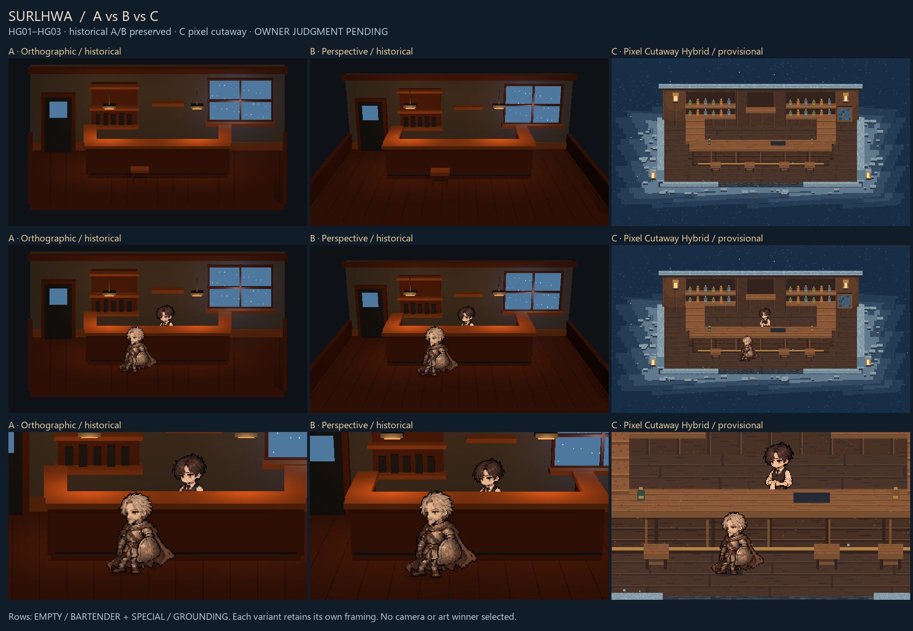

Empty
Open bar embedded in visible snow ground, with a quiet dark outer winter field.
Native 1280×720 · Native 1920×1080


HG01 · HG02 · HG03 — READY_FOR_OWNER_REVIEW. Owner judgment pending. HG04 has not started.
Separate C scene / build / native originals. A and B remain historical comparison evidence. C is provisional; no final camera or visual identity is selected.
Validation notes · Historical A/B native review · Open A/B/C overview board

The board uses labelled 50% nearest-neighbour thumbnails. The links below open untouched native Player captures; no global post-pixelation or UI filter is used.
Open bar embedded in visible snow ground, with a quiet dark outer winter field.
Native 1280×720 · Native 1920×1080
Charcoal ordinary silhouette; the same seat and world scale as the special fixture.
Native 1280×720 · Native 1920×1080

Don Quixote is VISUAL_FIXTURE_ONLY. No Canon ACT-order implication.
Native 1280×720 · Native 1920×1080

Bartender inside the U counter; guest outside. Compare head scale and physical occlusion.
Native 1280×720 · Native 1920×1080

Native camera close inspection of foot, seat, counter, alpha depth and visible knee.
Native 1280×720 · Native 1920×1080

Wider fixed framing exposes the relationship between warm bar and cold exterior.
Native 1280×720 · Native 1920×1080

Deterministic reference-pose replay, not native gameplay input or final locomotion. Static authored snowfall marks are a spatial fixture, not a production weather system.
Unity native suite: 44/44. Capture validator: 12 native stills + 2 clips, matching run/process identity, exit 0, no Player errors. 60-second explicit offscreen 1080p Development Player sample: mean 0.72 ms, P95 0.86 ms, 1624 draws/frame, idle GC mean 0 bytes/frame.
These are local Development/offscreen measurements, not GPU frame time, display latency or a minimum hardware promise. Native allocation warnings in this run: 0.
Capture manifest · Source/Player identity · 892-file A/B preservation baseline